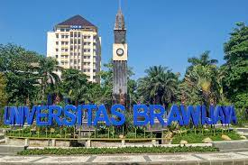

Universitas Brawijaya (UB)
Universitas Brawijaya (UB) adalah perguruan tinggi negeri di Indonesia yang berdiri pada tahun 1963 di Kota Malang, Jawa Timur melalui Ketetapan Menteri Pendidikan dan Ilmu Pengetahuan no.1 tanggal 5 Januari 1963. Tanggal tersebut kemudian ditetapkan sebagai Dies Natalis UB. Nama Brawijaya diberikan khusus oleh Presiden Soekarno dengan harapan mampu gemilang seperti Raden Wijaya (Brawijaya I) selaku pendiri Kerajaan Majapahit sekaligus menjadi kampus kebanggaan bangsa Indonesia.
Universitas Brawijaya merupakan kampus elit di Indonesia dan secara konsisten menduduki peringkat 5 terbaik bersama dengan Universitas Indonesia, Institut Pertanian Bogor, Universitas Gadjah Mada, dan Institut Teknologi Bandung berdasarkan penilaian resmi Kemenristekdikti. Sedangkan di tingkat Internasional, UB menduduki peringkat 51 di Asia dan 400 dunia. UB adalah salah satu dari sebagian kecil kampus Indonesia yang terindeks secara Internasional oleh QS.
UB memiliki empat kampus. Kampus utama terletak di sebelah barat Kota Malang (Jl. Veteran), dan kampus kedua terletak di Puncak Dieng atau dikenal sebagai UB Dieng yang digunakan untuk fasilitas olahraga outdoor, dan beberapa fasilitas riset maupun perkuliahan. Sedangkan kampus ketiga berada di Kota Kediri (Jl. Pringgodani) dan kampus keempat berada di Ibu Kota Jakarta, Indonesia.
Sejarah
Awal Mula Pendirian:Universitas Brawijaya berawal dari Nood Universiteit In Nederlandsch-Indie (Nood-Uni) yang didirikan pada tahun 1941 selama pendudukan Belanda di Indonesia. Pada saat itu, universitas ini berfokus pada pendidikan hukum. Setelah kemerdekaan Indonesia, Nood-Uni berganti nama menjadi Universitas Indonesia dengan fokus pada hukum dan ekonomi.
Pendirian UB: Pada tanggal 5 Januari 1963, pemerintah Indonesia mendirikan Universitas Brawijaya di Malang, Jawa Timur. UB awalnya dibuka dengan dua fakultas, yaitu Fakultas Pertanian dan Fakultas Hukum. Pada awalnya, universitas ini berusaha memenuhi kebutuhan akan pendidikan tinggi di wilayah timur Jawa.
Perkembangan dan Diversifikasi:UB terus berkembang seiring berjalannya waktu. Fakultas-fakultas baru didirikan, termasuk Fakultas Teknik, Fakultas Ilmu Budaya, dan Fakultas Ekonomi. Diversifikasi program studi membantu UB menjadi pusat pendidikan dan penelitian yang lebih luas.
Prestasi dan Kepemimpinan: UB telah meraih berbagai prestasi di berbagai bidang, termasuk penelitian dan pengabdian masyarakat. Universitas ini telah memimpin banyak inisiatif untuk meningkatkan mutu pendidikan tinggi di Indonesia, serta terlibat dalam berbagai program pengembangan wilayah.
Visi Masa Depan: UB terus berkomitmen untuk menjadi pusat pendidikan unggul dan berperan dalam pengembangan masyarakat dan wilayah. Dengan visi dan semangat untuk terus berinovasi, UB diharapkan akan terus memberikan kontribusi yang berharga bagi Indonesia dalam hal pendidikan, penelitian, dan pengabdian masyarakat.